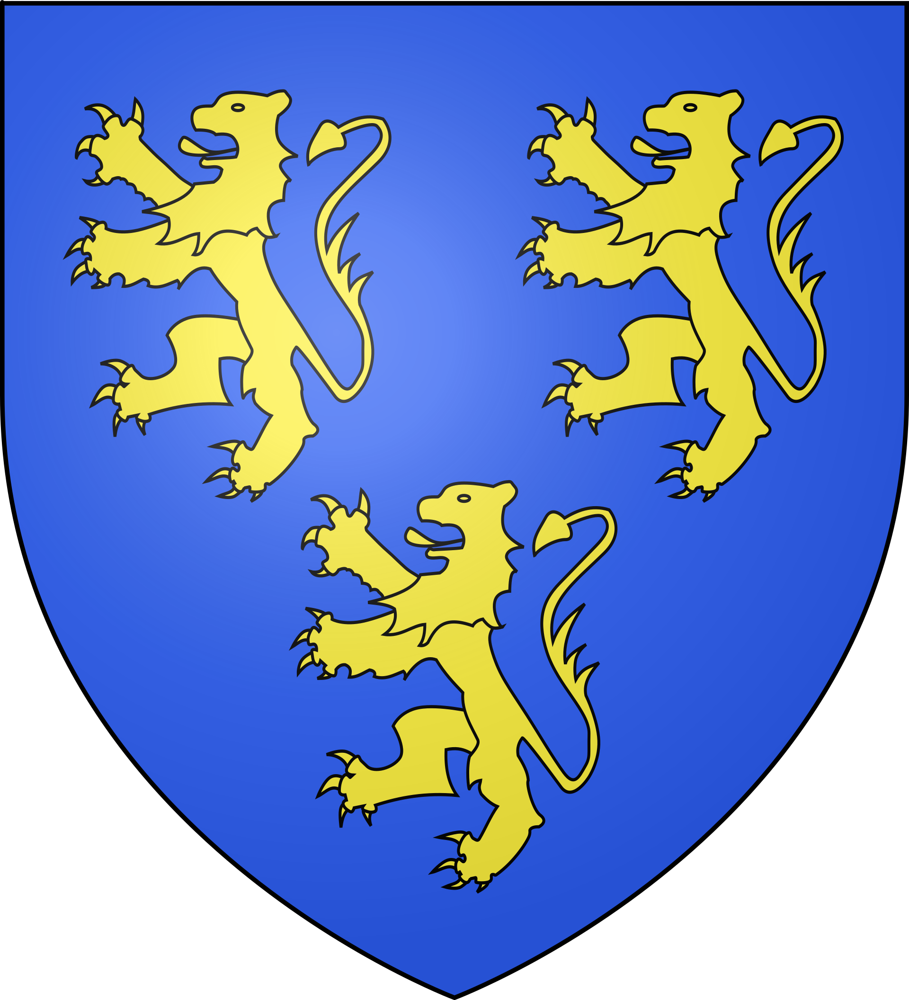
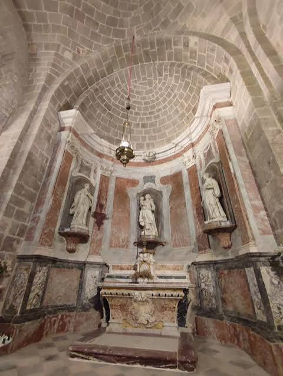

Caunes
-MinervoisTerre du marbre incarnat, entre abbaye et carrières


⟹ Sites Emblématiques ⟸

Au pied de la Montagne Noire, à la charnière du Minervois viticole et des premiers reliefs, Caunes-Minervois possède une histoire beaucoup plus ancienne que la renommée de son marbre. Le terroir a été fréquenté dès la Préhistoire et durant l'Antiquité, mais la formation du bourg actuel est surtout indissociable de son abbaye bénédictine. Une charte attribuée à Charlemagne, datée de 794, confirme l'établissement monastique placé sous la conduite de l'abbé Anian, compagnon de Benoît d'Aniane. L'abbaye devient ainsi l'un des grands pôles religieux du Minervois carolingien.
Le monastère bénéficie progressivement de donations, de terres, de droits et de privilèges. Au Moyen Âge, son influence structure l'habitat : un bourg se développe à proximité de l'enclos monastique, protégé par des fortifications. Les habitants de Caunes apparaissent clairement dans les textes au XIIᵉ siècle. En 1136, le vicomte Roger Ier Trencavel s'engage à respecter l'immunité du monastère et les fortifications de la ville ; en 1149, les hommes et les femmes de la villa de Caunis interviennent collectivement dans un accord avec l'abbaye. Ces documents témoignent déjà d'une communauté urbaine organisée.

L'abbatiale Saint-Pierre-et-Saint-Paul conserve les traces de plusieurs campagnes de construction. Son spectaculaire chevet roman, élevé principalement aux XIᵉ et XIIᵉ siècles, appartient aux grands ensembles romans du Languedoc. Le monastère connaît ensuite remaniements, reconstructions et embellissements jusqu'à l'époque moderne. La présence de reliques et le culte de saints locaux renforcent également son rôle spirituel et attirent pèlerins et donations.
Caunes est aussi mêlée aux bouleversements religieux du Midi. Le Minervois est fortement touché par le catharisme et par la croisade contre les Albigeois. Vers 1226, un évêque cathare est exécuté à Caunes. Quelques années plus tard, le dominicain Ferrier y installe un important tribunal de l'Inquisition, actif de 1237 jusque dans les années 1250. La position de Caunes, au cœur d'une région encore difficilement soumise, la puissance de son abbaye et ses défenses expliquent probablement ce choix. Vers 1248, alors que le pouvoir royal cherche à neutraliser les places susceptibles de soutenir de nouvelles résistances, l'abbé intervient avec d'autres prélats afin d'obtenir la grâce royale concernant les murailles de la ville.
À la fin du Moyen Âge et surtout à la Renaissance, Caunes s'enrichit et se transforme. Des familles de notables, marchands, officiers et propriétaires font édifier ou remanier de belles demeures. Les façades, cours, escaliers et fenêtres à meneaux encore visibles dans le centre ancien racontent cette prospérité. L'hôtel d'Alibert, remarquable demeure Renaissance, en est l'un des exemples les plus connus.
Une seconde histoire, minérale celle-ci, va donner à Caunes une renommée internationale. Les montagnes qui entourent le village renferment plusieurs variétés de calcaires marbriers, notamment le célèbre marbre rouge incarnat, veiné de blanc, ainsi que des marbres rouges, gris et verts. Leur usage est ancien, mais l'exploitation change d'échelle au XVIIᵉ siècle. Vers 1610, l'abbé Jean d'Alibert fait examiner les gisements par un maître marbrier italien, Stefano Sormano ou Soriano selon les sources. Après plusieurs années de recherches et d'essais, celui-ci obtient une concession en 1633.
L'exploitation se développe rapidement grâce au savoir-faire de marbriers italiens. D'abord largement exportés vers l'Italie, les marbres jaspés du Languedoc deviennent particulièrement recherchés en France à partir des années 1660, lorsque le goût baroque favorise les pierres polychromes. Leur diffusion est ensuite facilitée par l'ouverture du canal du Midi en 1681, qui permet d'acheminer plus aisément les lourds blocs vers Toulouse, Bordeaux, Paris et les ports.
Sous Louis XIV, les carrières de Caunes sont étroitement associées aux grands chantiers royaux. Le marbre incarnat et d'autres variétés du Minervois sont employés dans les décors monumentaux de l'époque classique et baroque. On retrouve la pierre de Caunes dans de nombreux palais, églises et hôtels particuliers, notamment à Versailles, où les marbres rouges du Languedoc participent au faste décoratif voulu par la monarchie. Cette réputation se prolonge aux XVIIIᵉ et XIXᵉ siècles : colonnes, cheminées, autels, bénitiers, dallages et éléments sculptés en marbre de Caunes se rencontrent dans de nombreux monuments français et européens.
La carrière dite du Roi, la carrière de marbre gris et celle du roc de Buffens témoignent encore de cette activité séculaire. L'extraction a profondément marqué le paysage, les métiers et la mémoire locale : carriers, tailleurs de pierre, scieurs, polisseurs, voituriers et négociants formaient toute une économie spécialisée. Le marbre n'était donc pas seulement une matière prestigieuse destinée aux palais ; il constituait une véritable culture technique transmise de génération en génération.
La Révolution française met fin à l'ordre monastique et transforme le statut de l'abbaye, tandis que le XIXᵉ siècle voit évoluer l'exploitation industrielle de la pierre. Le village conserve néanmoins un patrimoine exceptionnel où se superposent les traces de l'abbaye médiévale, des conflits religieux, de la prospérité Renaissance et de l'aventure marbrière. La grande fontaine d'Aiguebelle, élevée en 1825 et dominée par un obélisque de marbre, illustre jusque dans l'espace public cette identité minérale.
Aujourd'hui, Caunes-Minervois demeure inséparable de cette double mémoire : celle d'un bourg abbatial majeur du Languedoc et celle d'une capitale historique du marbre incarnat. L'abbaye, les hôtels particuliers, les ruelles anciennes et les anciennes carrières permettent de lire plus de mille ans d'histoire dans un même paysage.
Caunes-Minervois est traversé par l'Argent Double, petit affluent de l'Aude qui coule toute l'année et anime le cœur du village. Le vignoble AOC Minervois qui l'entoure profite d'un microclimat où se mêlent influences méditerranéennes et fraîcheur de la Montagne Noire toute proche.
Le marbre incarnat de Caunes, rouge ponctué de taches blanches, doit sa teinte unique à la composition minérale exceptionnelle du sous-sol de la Montagne Noire.
— Musée du Marbre de Caunes-MinervoisLes anciennes carrières, dont certaines toujours en activité, entaillent les hauteurs boisées au nord du village, offrant un paysage minéral spectaculaire où la roche rouge tranche avec la garrigue environnante. Le marbre, aujourd'hui encore exporté à l'international, continue de faire voyager le nom de Caunes bien au-delà du Minervois.
Cité de Carcassonne à 25 km, la plus grande forteresse médiévale d'Europe, classée au patrimoine mondial de l'UNESCO.
Minerve cité cathare et Plus Beau Village de France, au cœur du Minervois viticole.
Gouffre géant de Cabrespine l'une des plus vastes cavités touristiques du monde, à proximité du pic de Nore.
Canal du Midi ses berges ombragées de platanes, à une vingtaine de minutes vers le sud.